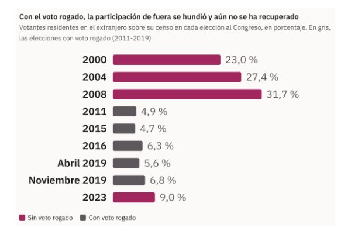

Actualidad · Los pueblos que siempre aciertan · España
Los pueblos que siempre aciertan se juegan la racha por un puñado de votos: en Ayerbe, el PP ganó en 2023 por 2
Solo 24 municipios han votado al ganador en las 16 elecciones generales. En seis, el PP ganó en 2023 por menos de tres puntos; en Plasencia, el mayor, por 641 votos.
Por Nacho G. del Álamo · · Actualizado el
Cada párrafo lleva una etiqueta: dato (cifra comprobable con las fuentes), patrón (relación que se repite, sin afirmar la causa), hipótesis (explicación posible, sin dos fuentes independientes) o contexto (hechos y declaraciones publicados por otros, enlazados). Cómo verificamos
DatoDe los 7.870 municipios con resultados en las 16 elecciones generales desde 1977, solo 24 han votado siempre como primera fuerza al partido que ganó en España, como contamos en la pieza de Plasencia. El domingo 29 votan por decimoséptima vez. Y en varios de ellos la racha depende de muy pocos votos: en 2023, el PP ganó en Ayerbe (Huesca) por 2 votos, en Biescas (Huesca) por 11, en Los Navalmorales (Toledo) por 12 y en Jaca (Huesca) por 64.
Ver la tabla
| Municipio | Provincia | Electores 2023 | PP | PSOE | Ventaja (votos) | Ventaja (puntos) |
|---|---|---|---|---|---|---|
| Ayerbe | Huesca | 870 | 239 | 237 | 2 | 0,3 |
| Jaca | Huesca | 10.404 | 2.419 | 2.355 | 64 | 0,9 |
| Los Navalmorales | Toledo | 1.758 | 442 | 430 | 12 | 1,1 |
| Biescas | Huesca | 1.252 | 282 | 271 | 11 | 1,3 |
| Villaquilambre | León | 14.780 | 3.422 | 3.246 | 176 | 1,7 |
| Plasencia | Cáceres | 32.589 | 8.654 | 8.013 | 641 | 2,9 |
| Jarque de Moncayo | Zaragoza | 333 | 87 | 80 | 7 | 3,0 |
| La Cañada de Verich | Teruel | 78 | 22 | 19 | 3 | 4,8 |
| Gurrea de Gállego | Huesca | 1.215 | 372 | 324 | 48 | 5,4 |
| Cuadros | León | 1.785 | 458 | 384 | 74 | 5,4 |
| Murillo de Río Leza | La Rioja | 1.220 | 437 | 385 | 52 | 5,5 |
| Palazuelo de Vedija | Valladolid | 150 | 49 | 42 | 7 | 5,7 |
| Bulbuente | Zaragoza | 179 | 44 | 36 | 8 | 5,9 |
| Ezcaray | La Rioja | 1.606 | 557 | 483 | 74 | 6,1 |
| Onzonilla | León | 1.522 | 411 | 335 | 76 | 6,5 |
| Gelsa | Zaragoza | 823 | 232 | 191 | 41 | 6,6 |
| Zuera | Zaragoza | 5.570 | 1.569 | 1.282 | 287 | 6,8 |
| Talamanca de Jarama | Madrid | 2.963 | 742 | 596 | 146 | 6,8 |
| San Miguel del Cinca | Huesca | 612 | 208 | 172 | 36 | 7,2 |
| Villaralbo | Zamora | 1.487 | 440 | 359 | 81 | 7,5 |
| Fuentes de Ebro | Zaragoza | 3.323 | 891 | 718 | 173 | 7,6 |
| Gines | Sevilla | 10.602 | 3.109 | 2.506 | 603 | 7,7 |
| Valencina de la Concepción | Sevilla | 6.469 | 1.975 | 1.498 | 477 | 9,9 |
| Robres | Huesca | 427 | 166 | 107 | 59 | 17,6 |
Los seis que están en el filo
DatoEn seis de los 24, la ventaja del PP sobre el PSOE en 2023 fue de menos de tres puntos: Ayerbe (0,3), Jaca (0,9), Los Navalmorales (1,1), Biescas (1,3), Villaquilambre, en León (1,7), y Plasencia, en Cáceres (2,9). En el conjunto de España, sin el voto exterior, fue de 1,4 puntos.
DatoPlasencia es el mayor de los 24, con 32.589 electores. En 2023 el PP sacó 8.654 votos y el PSOE, 8.013: 641 de diferencia. Pedro Sánchez tiene previsto un acto allí el viernes a las 12.00, último día de campaña, según Infobae y La Portada de Extremadura, que cita al PSOE extremeño.
Jaca, el que más se parece a España
DatoAcertar el ganador no es votar como la media del país, pero Jaca hace las dos cosas. En 2023 dio al PP el 34,3 %, al PSOE el 33,4 %, a Vox el 14,2 % y a Sumar el 15,2 %. En el conjunto de España fueron el 33,3, el 32,0, el 12,5 y el 12,4 %.
Ver la tabla
| Partido | Jaca (%) | España (%) |
|---|---|---|
| PP | 34,3 | 33,3 |
| PSOE | 33,4 | 32,0 |
| Vox | 14,2 | 12,5 |
| Sumar | 15,2 | 12,4 |
Cuatro que empataron
DatoOtros cuatro municipios votaron al ganador en todas las generales menos en una, en la que los dos primeros sacaron los mismos votos: Rioseco de Soria (Soria) en 2000, Sigüés (Zaragoza) en 2011, Arcenillas (Zamora) en 2016 y Belmonte de San José (Teruel) en 2023. En Belmonte de San José, el PP y el PSOE sacaron 29 votos cada uno en 2023. Un empate no es acertar, así que no están en la lista.
Por qué aciertan, y si seguirán
DatoLos datos no dicen por qué aciertan, pero sí en qué se parecen a España. Tomados juntos, y ponderados por población, los 24 tienen una edad media de 44,0 años (España, 43,9), un 19,8 % de mayores de 65 (España, 20,4 %), un 32,9 % de población con estudios superiores (31,9 %) y un 16,6 % de paro en 2021 (17,2 %). Su renta por unidad de consumo es de 21.268 euros, frente a 22.325. Donde más se separan es en la población extranjera: un 7,0 %, frente al 12,9 % del conjunto del país.
ContextoTambién comparten lo que no tienen: ninguno es una gran ciudad (entre los 24 suman 129.920 habitantes) y ninguno está en Cataluña, el País Vasco, Galicia o Canarias, donde los partidos nacionalistas y regionales ganan a menudo en los municipios. Estos parecidos acompañan a los aciertos, pero no los explican: los datos no permiten decir que sean la causa.
DatoSobre si seguirán, la historia de la lista da una pista. En ninguna de las 15 elecciones desde 1979 se ha quedado igual: cada vez ha perdido al menos 1. Cuando el partido ganador en España repitió, siguió acertando entre el 73,1 % y el 98,2 % de los que llevaban pleno. Cuando cambió, entre el 26,3 % y el 94,6 %: en 1996, cuando ganó el PP por primera vez, solo siguió uno de cada cuatro; en 2023, algo más de la mitad, 24 de 44.
Qué no dicen estos datos
ContextoQue un pueblo haya acertado 16 veces no dice quién ganará el domingo. Con casi 8.000 municipios y 16 elecciones, es esperable que unos pocos coincidan siempre por acumulación de casualidades. Y que el PP ganara por poco en 2023 tampoco anticipa que vaya a perder: solo indica qué municipios pueden salir de la lista con un cambio pequeño. La mitad, 12, están en Aragón. Entre los 24 suman 102.017 electores.
ContextoLa noche del 29N, en la página de resultados de las elecciones generales 2026 se podrá ver, municipio a municipio, si los 24 siguen acertando. Esta pieza se actualizará con el resultado.
Preguntas frecuentes
¿Qué pueblos de España siempre aciertan en las elecciones generales?
24 de 7.870 municipios han votado siempre como primera fuerza al partido que ganó en España en las 16 generales desde 1977. El mayor es Plasencia (Cáceres), con 32.589 electores; la mitad están en Aragón.
¿Por cuántos votos ganó el PP en Plasencia en 2023?
Por 641: 8.654 votos frente a 8.013 del PSOE, 2,9 puntos.
¿Qué pueblo que siempre acierta ganó el PP por menos votos en 2023?
Ayerbe (Huesca), por 2 votos: 239 frente a 237.
¿Sirven estos pueblos para saber quién ganará el 29N?
No. Que acierten siempre es en buena parte casualidad acumulada; no es una predicción.
Plasencia acierta siempre · Resultados de las elecciones generales 2026
Método y fuentes
- Qué se compara
- Los 24 municipios que han votado como primera fuerza al partido ganador en España en las 16 elecciones generales de 1977 a 2023, con la ventaja del PP sobre el PSOE en 2023 en cada uno, su perfil (edad, renta, estudios, paro, población extranjera) frente al de España y cuántos siguieron acertando en cada elección.
- Límites
- Acertar siempre es en buena parte casualidad acumulada y no sirve para predecir. Un empate de los dos primeros no cuenta como acierto. El perfil es correlacional: que los 24 se parezcan a España en edad o renta no explica que acierten. España, sin el voto exterior. Sin encuestas: el 29N está en la veda (artículo 69.7 de la LOREG).
- Cómo se calcula
- Partido más votado de cada municipio frente al de España, como en la pieza de Plasencia (actualidad/src/historia/datos.py). Porcentajes sobre los votos a candidaturas. Perfil: medias ponderadas por población. Script: actualidad/src/resumenes/pueblos_aciertan.py. Cifras reproducibles con los scripts del expediente de la pieza. Metodología de Actualidad · Metodología del Atlas
- Fuentes
- Autoría
- Nacho G. del Álamo
- Revisión de datos y texto
- Nacho G. del Álamo, 26 de noviembre de 2026
- Publicado · actualizado
- 26 de noviembre de 2026 · 26 de noviembre de 2026, a las 15.00
- Correcciones
- 26-11-2026: en la fila de España de 2023, el PP sumaba también los 51.778 votos de UPN, que fue por separado en Navarra. Con el PP solo, sacó el 33,3 % (no el 33,5 %) y su ventaja sobre el PSOE en el conjunto de España, sin voto exterior, fue de 1,4 puntos (no 1,6). Los 24 municipios no cambian.
Serie «Camino al 29N»: 159 piezas
- Elecciones generales: una de cada tres secciones cambió de ganador entre 2019 y 2023
- Debate Sánchez Feijóo: hora, dónde verlo y quién gana el cara a cara
- Elecciones generales: en Gijón, Vox sacó en 2023 su mejor resultado en Somió, el barrio más rico: 17,0 %
- Veda de encuestas: hasta cuándo se pueden publicar las del 29N
- Cómo votar en las elecciones generales del 29N: horario, qué llevar y cómo saber tu colegio
- A qué hora se sabrán los resultados de las elecciones generales del 29N
- Encuestas Andorra 29N: qué son las encuestas prohibidas y qué dice la ley
- Después de las elecciones generales del 29N: cuándo se constituyen las Cortes y los plazos de la investidura
- Elecciones generales del 29N en cifras: electores, escaños, candidaturas y mesas de cada provincia
- Escrutinio de las elecciones generales del 29N: cómo seguirlo en directo y cuándo es definitivo
- Voto en blanco y voto nulo en las elecciones generales del 29N: qué cuenta y a quién afecta
- Programa electoral de PP, PSOE, Vox y Frente Amplio: qué propone cada uno el 29N
- Real Madrid-Alavés: en Vitoria, el PSOE ganó en 128 de las 166 secciones, pero en Mendizorrotza, el barrio del estadio del Alavés, el PP sacó el 46,5 %
- La víspera del 29N: pueden votar 38.728.356 personas y 37 de los 350 escaños de 2023 cambiaban de manos con menos de un 10 % de votos
- Getafe-Atlético: en la ciudad del Coliseum, el PSOE pasó de ganar en 112 de las 122 secciones a ganar en 74, y el PP se quedó a 2.182 votos
- El derbi sevillano se juega en barrios del PP: en Nervión, el del Sánchez-Pizjuán, ganó en 37 de 41 secciones; en la ciudad, el PSOE fue primero en 286 de 521
- Debate a cuatro: hora, dónde verlo y en qué orden hablan Sánchez, Feijóo, Abascal y Colau
- Estás aquíLos pueblos que siempre aciertan se juegan la racha por un puñado de votos: en Ayerbe, el PP ganó en 2023 por 2
- Votar desde el extranjero el 29N, ley en mano: la urna de los consulados cierra el jueves 26 y esos votos no se cuentan hasta el viernes 4 de diciembre
- El debate a cuatro, comprobado con datos: de cinco frases de Sánchez, Feijóo, Abascal y Colau, solo una es exacta
- Ver las 159 piezas de la serie
Más datos: elecciones generales del 29N de 2026: fecha y escaños por provincia · resultados de las elecciones generales 2026 (29N) y los de 2023 · dónde y cómo votar el 29N: colegio electoral, voto por correo y plazos.
Sigue leyendo
 Crónica del sábadoLa víspera del 29N: pueden votar 38.728.356 personas y 37 de los 350 escaños de 2023 cambiaban de manos con menos de un 10 % de votos
Crónica del sábadoLa víspera del 29N: pueden votar 38.728.356 personas y 37 de los 350 escaños de 2023 cambiaban de manos con menos de un 10 % de votos Real Madrid-AlavésReal Madrid-Alavés: en Vitoria, el PSOE ganó en 128 de las 166 secciones, pero en Mendizorrotza, el barrio del estadio del Alavés, el PP sacó el 46,5 %
Real Madrid-AlavésReal Madrid-Alavés: en Vitoria, el PSOE ganó en 128 de las 166 secciones, pero en Mendizorrotza, el barrio del estadio del Alavés, el PP sacó el 46,5 % El debate, con datosEl debate a cuatro, comprobado con datos: de cinco frases de Sánchez, Feijóo, Abascal y Colau, solo una es exacta
El debate, con datosEl debate a cuatro, comprobado con datos: de cinco frases de Sánchez, Feijóo, Abascal y Colau, solo una es exacta
Camino al 29NVotar desde el extranjero el 29N, ley en mano: la urna de los consulados cierra el jueves 26 y esos votos no se cuentan hasta el viernes 4 de diciembre El debate a cuatroDebate a cuatro: hora, dónde verlo y en qué orden hablan Sánchez, Feijóo, Abascal y Colau
El debate a cuatroDebate a cuatro: hora, dónde verlo y en qué orden hablan Sánchez, Feijóo, Abascal y Colau Camino al 29NVoto en blanco y voto nulo en las elecciones generales del 29N: qué cuenta y a quién afecta
Camino al 29NVoto en blanco y voto nulo en las elecciones generales del 29N: qué cuenta y a quién afecta